Creo siti web per piccole attività.
Per ristoranti, parrucchieri, officine, studi medici, artigiani e comuni. Il sito lo progetto, lo scrivo e lo metto online io. La prima bozza la vedete entro tre giorni.
La prima consulenza è gratuita. Al telefono rispondo io: +421 902 464 022
- Prezzo del sito
- da 250 €
- Prima bozza
- entro 3 giorni
- Risposta
- entro 24 ore
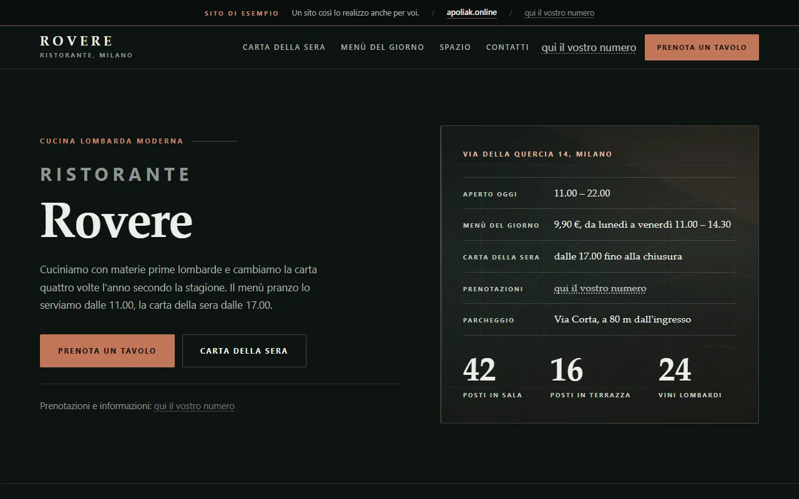
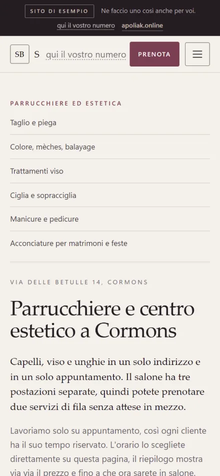
Siti di esempio
Ho realizzato 44 siti per attività inventate di settori diversi, così vedete come potrebbe essere il vostro. Potete aprirli e provarli tutti. Prenotazioni, calcolatori e carrello funzionano davvero.
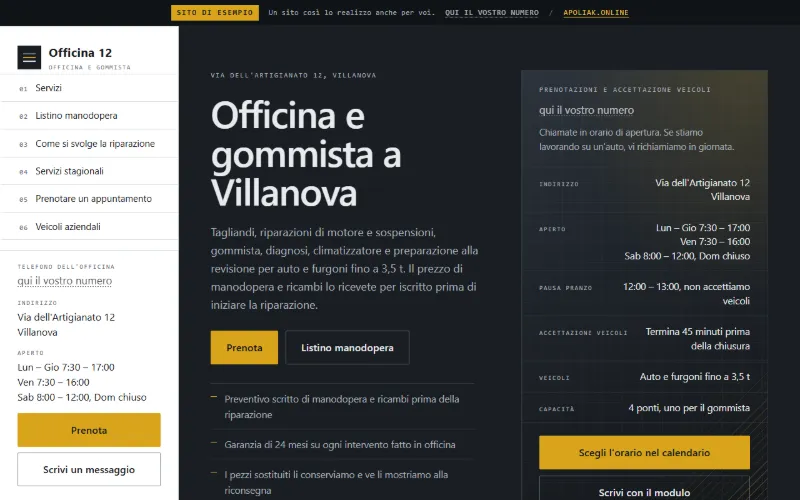
Officina e gommistaOfficina 12Prenotazione con il prezzo della riparazione già indicato.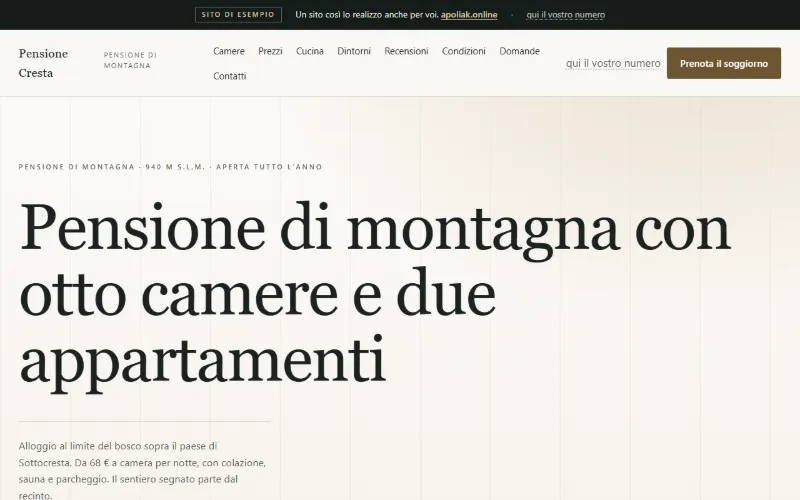
Pensione di montagnaPensione CrestaPrenotazione con calcolo di notti, colazione e imposta di soggiorno.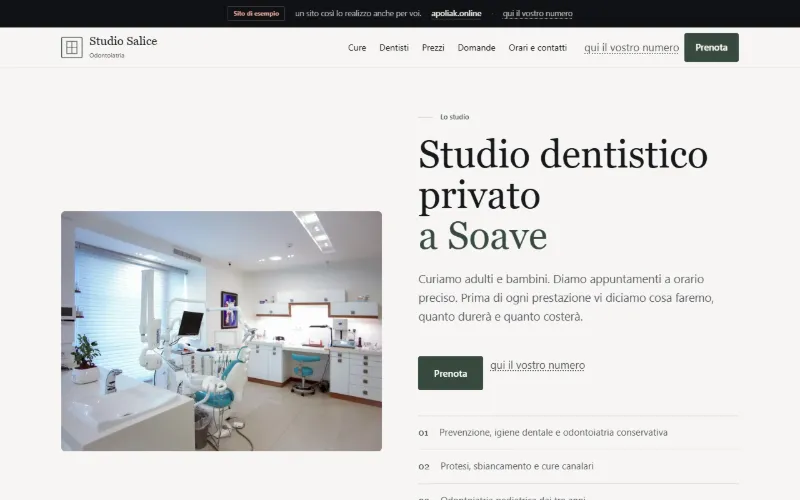
Studio dentisticoStudio dentistico SalicePrenotazione per pazienti con fondo sanitario e privati.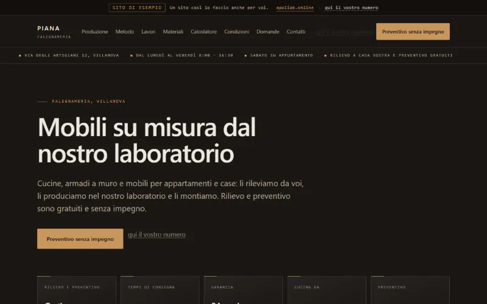
FalegnameriaFalegnameria PianaCalcolatore del prezzo per misure, materiale e finitura.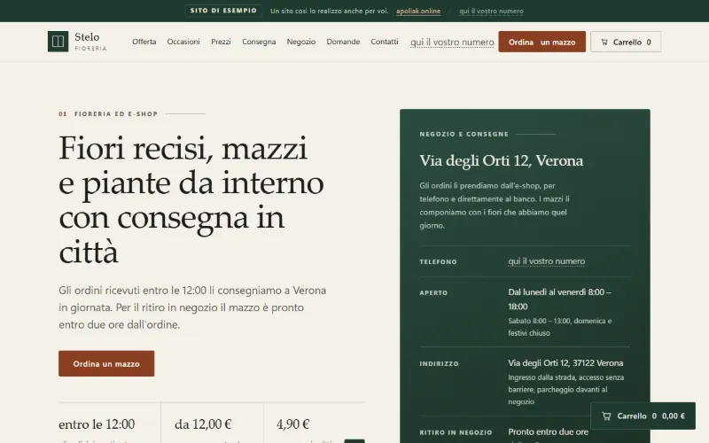
Fioreria con e-shopFioreria SteloCarrello con mazzi, consegna e totale.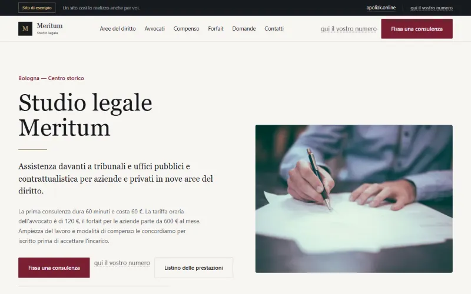
Studio legaleStudio legale MeritumRichiesta con stima del compenso per tipo di pratica.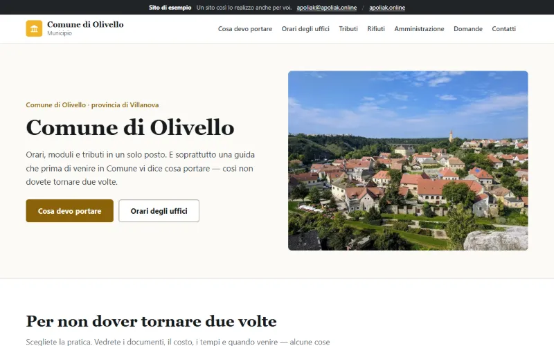
ComuneComune di OlivelloPer ogni pratica costo, tempi ed elenco dei documenti.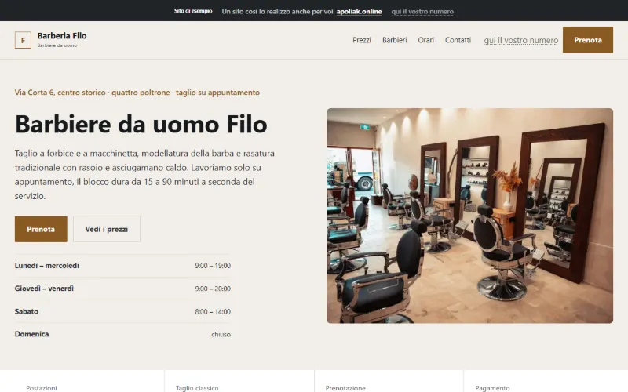
BarbiereBarberia FiloPrenotazione del primo orario libero con il barbiere scelto.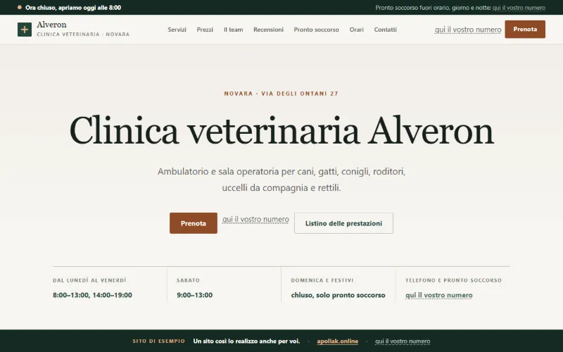
Clinica veterinariaClinica veterinaria AlveronPrenotazione per specie e taglia dell'animale.
In cosa vi aiuto
Un sito nuovo
Per un'attività che finora è solo su Facebook o Instagram, oppure non ha niente su internet. Progetto struttura, grafica e testi.
Un nuovo aspetto per il vecchio sito
Ricostruisco il sito e riprendo i contenuti dal vecchio, con il reindirizzamento dei vecchi indirizzi.
Prenotazioni, ordini, e-shop
Le funzioni che avete provato negli esempi: prenotazione di un orario, calcolatore del prezzo o carrello con pagamento con carta.
Prezzi
Scegliete il sito che vi serve e vedete subito un prezzo indicativo. L'importo esatto ve lo confermo entro 24 ore e durante il lavoro non cambia più. Si paga in due metà: una all'ordine, una alla messa online.
In ogni pacchetto sono compresi configurazione del dominio, certificato HTTPS, pubblicazione sul server, SEO di base e codice sorgente. I prezzi di mercato abituali vengono dai listini pubblici dei web designer slovacchi (settembre 2026).
La vostra scelta
- Standard
- 490 €
Totale indicativo da 490 €
Prima bozza entro 3 giorni, pronto in 10 giorni lavorativi.
Dominio e hosting si pagano direttamente al fornitore, l'importo ve lo scrivo prima dell'ordine.
Come funziona
Dal primo messaggio alla messa online. A ogni passo è scritto cosa mi servirà da voi.
-
Giorno 1
Scrivete o chiamate
Mi dite di cosa vi occupate e cosa deve fare il sito. Entro 24 ore vi rispondo con prezzo e tempi.
Da voi: qualche frase o una breve telefonata.
-
Entro 3 giorni
Prima bozza
Vi mando il link alla bozza. La aprite sul telefono e sul computer e mi dite cosa cambiare.
Da voi: osservazioni.
-
Entro 10 giorni lavorativi
Sito pronto
Aggiungo testi, foto e funzioni. Il sito in lavorazione lo vedete sempre tramite il link. Con il pacchetto Pro ci vogliono da 3 a 5 settimane.
Da voi: testi e foto, se li avete.
-
Messa online
Il sito va online
Configuro dominio, HTTPS e SEO di base. Vi consegno gli accessi e il codice sorgente.
Da voi: approvazione e saldo.
Chi sono
Mi chiamo Alex Poliak e i siti li faccio da solo, da Bratislava per attività di tutta Italia. Si può fare tutto a distanza: una telefonata, un'e-mail e il link alla bozza.
Quando mi scrivete o mi chiamate, parlate direttamente con me. Anche tra un anno, quando sul sito ci sarà da cambiare qualcosa, risponderà la stessa persona che l'ha fatto.
Scrivo i siti a mano, senza template e plugin a pagamento. Si caricano in fretta e non pagate licenze mensili. Come lavoro, giudicatelo dai 44 siti di esempio.
Su cosa potete contare
- Prezzo prima. Lo scrivo nel preventivo e durante il lavoro non cambia.
- Pagamento in due rate. Metà all'ordine, metà alla messa online.
- Il sito è vostro. Il dominio è intestato a voi e ricevete codice e accessi.
- Nessun canone mensile per il sito. Dominio e hosting li pagate direttamente al fornitore.
- Risposta entro 24 ore. Al telefono rispondo io.
Domande frequenti
Non avete trovato la risposta? Chiamate il +421 902 464 022 o scrivete a apoliak@apoliak.online.
Cosa succede dopo il primo messaggio?
Entro 24 ore vi rispondo o vi chiamo e chiedo quello che manca nel messaggio. Poi ricevete per iscritto lavoro, prezzo e tempi. Se ci accordiamo, la prima bozza l'avete entro tre giorni. Finché non ordinate il sito, non pagate nulla.
Posso avere un sito come uno degli esempi?
Sì. Scrivetemi quale esempio vi piace e di cosa vi occupate. Preparo la bozza per la vostra attività, con il vostro nome, la vostra offerta e i vostri colori.
Cosa significa consulenza gratuita?
Vediamo insieme cosa serve alla vostra attività. Propongo il lavoro da fare, vi do una stima di prezzo e tempi e spiego cosa comprende il pacchetto. Lo facciamo al telefono o via e-mail. È senza impegno e il consiglio lo ricevete anche se il lavoro non lo affidate a me.
Quanto pago dopo il primo anno?
Per il sito in sé non pagate nulla al mese. Si pagano solo dominio e hosting, direttamente al fornitore. La manutenzione da 9 € al mese è facoltativa, il sito funziona anche senza.
Chi mi aggiornerà il menù del giorno o il listino?
Lo decidiamo prima. O preparo il sito in modo che possiate farlo da soli, oppure lo faccio io con la manutenzione. Nel preventivo sarà scritto.
Devo fornire testi e foto?
No. Se avete dei testi, li uso. Altrimenti li scrivo io: nel pacchetto Pro sono compresi, negli altri costano 19 € a pagina. Se non avete foto, imposto la grafica in modo che non ne abbia bisogno.
E se la bozza non mi piace?
Mi dite cosa cambiare e lo rifaccio. Starter comprende un giro di modifiche, Standard due e con Pro le facciamo man mano.
A chi appartengono sito e dominio?
A voi. Il dominio è registrato a vostro nome e sito e codice sorgente, una volta pagati, sono vostri. Se vorrete passare a qualcun altro, gli consegnate tutto senza il mio permesso.
Perché costate meno delle agenzie?
Faccio tutto da solo, quindi non pagate i costi di un'agenzia. Scrivo il sito senza template e plugin a pagamento, per questo non ci sono nemmeno licenze mensili. I prezzi di mercato abituali li trovate accanto a ogni pacchetto nel listino.
Il mio sito si troverà su Google?
La SEO di base è compresa in ogni pacchetto: descrizioni compilate, titoli fatti bene, mappa del sito e caricamento rapido. Il primo posto nei risultati non lo prometto, l'ordine lo decide Google con le sue regole.
Scrivetemi cosa vi serve
Bastano due righe su cosa fate e cosa deve fare il sito. Non serve sapere quale pacchetto volete. Vi rispondo entro 24 ore con prezzo e tempi.
apoliak@apoliak.onlineLa prima consulenza è gratuita e senza impegno. Se avete ricevuto una mia e-mail, basta rispondere a quella.
Cosa scrivermi
- Di cosa vi occupate e dove si trova l'attività
- Se avete già un sito o partiamo da zero
- Cosa deve fare il sito
- Quale esempio vi piace, se ce n'è uno
Siete già miei clienti? Scrivete a support@apoliak.online.